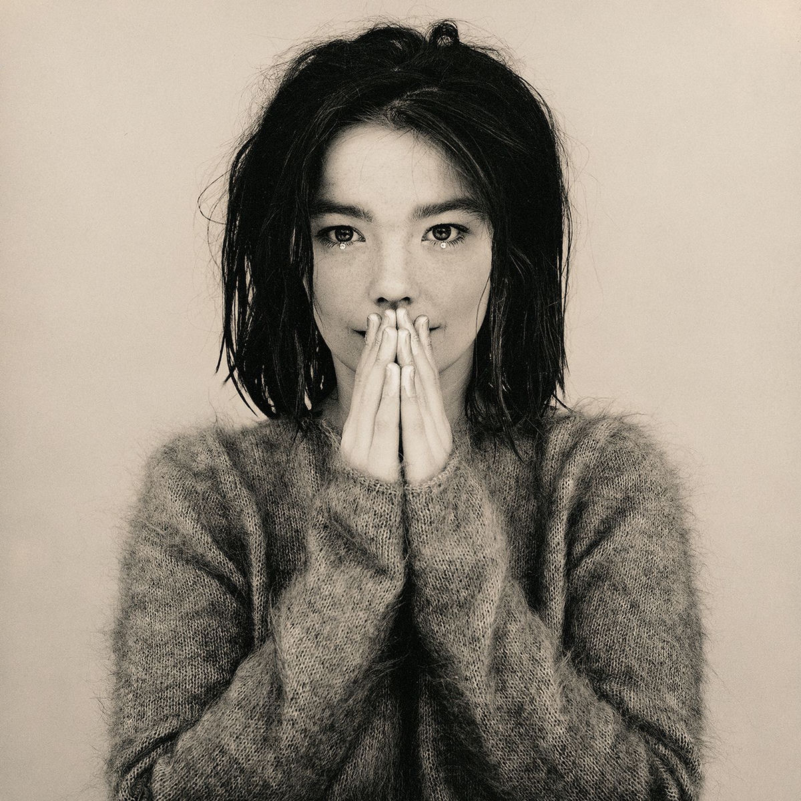
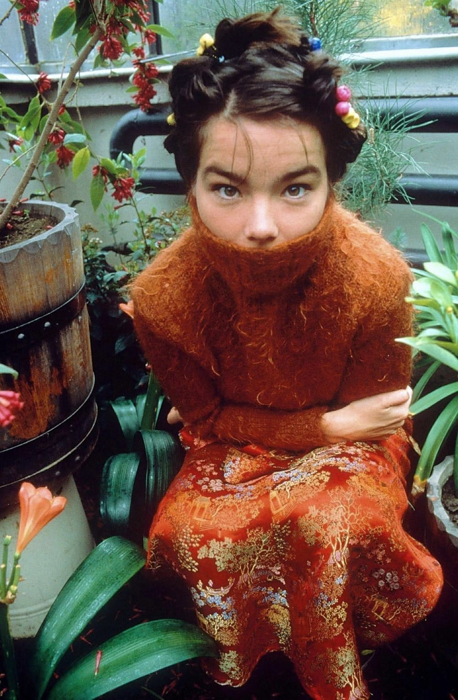

Björk Guðmundsdóttir
60 Jaar
TOP SONGS
my opinion...
Van het Album Debut
10. Like someone in love
9. violently happy
8. come to me
7. like someone in love
6. venus as a boy
5. one day
4. aeroplane
3. there's more to life than this
2. crying
1. human behaviour
en natuurlijk big time sensuality

Wil je een kijkje nemen op haar officiele website? klik hier!
Nog meer informatie over Bjork? klik dan hier
Heb je vragen aan mij over de website of Bjork zelf?